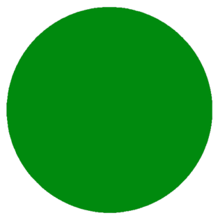

Signal Tower
A signal tower is a small column of coloured lights, usually also with a buzzer.
It is useful to have when running longer operations on Rosetta as it shows at a glance the system’s current status (e.g., is it still running or not). And they LED lights are typically bright enough that they can be seen from across the shop.
Rosetta is also configured to illuminate the red light if a typical error is encountered.
The presence of a buzzer is useful as it can alert you if you are not looking in that direction. This is especially useful if an error is encountered.
Use of a signal tower is optional: everything works without one.
What It Tells You
| Signal | What it means |
 Red Light | Something went wrong and your attention to the system is needed:
This lamp stays lit until you resolve the error and re-power on Rosetta. |
|  Green Light | The machine is working on a task which could be lengthy. These are the operations setup to illuminate the green light:
Other activities (e.g., jogging) do not illuminate this light. |
 Siren | A siren which is used to alert you to certain conditions are achieved:
|
| Both lights off | The machine is idle, finished, or turned off. |
The full list of what does, and does not, turn each light on is in Inputs, Outputs, and Sounds - Signal Tower. The buzzer's sounds are explained in Sounds.
Why It Is Useful
- Long programs. A rose engine pattern can run for hours. This enables you to work elsewhere in the shop and see from a distance whether the machine is still running (green), has finished (dark), or has stopped with a problem (red).
- Hear it, even when you can't see it. The buzzer tells you the moment something goes wrong, or when a job is done, without watching the screen.
- Problems stay visible. A following error, a tripped limit switch or a lost connection to a box can be over in an instant. The red light stays on so you know it happened, even if you were not there to see it.
What to Buy
The signal tower must be:
| Specification | Requirement |
| Voltage | 24 volts DC (VDC). The voltage supplied to this from Rosetta is 24 VDC. |
| Lights | At least a green and a red light. Other colours (such as yellow or blue) may be on the tower, but they will not be used. |
| Buzzer | Built in, with a steady (continuous) tone. A buzzer that pulses on its own will blur the short beeps together. |
| Light Type | LED, steady (not flashing). LED towers typically draw under 100 mA per light. |
| Wiring | The tower needs a separate wire for each light and the buzzer, plus one common wire.
The cabling of the signal tower to Rosetta is outlined in signal tower cabling. |
Signal towers sold for machine tools (often listed as "LED stack light" or "tower light 24V with buzzer") meet these requirements.